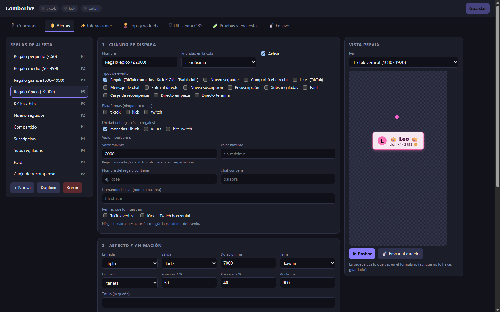

Alertas
Regalos, seguidores, suscripciones y raids. 12 animaciones, 6 temas, sonido y vídeo, con vista previa en vivo antes de salir al aire.
Para Windows 10 y 11 · se actualiza sola
Alertas · Tops · Interacciones · Metas, en una sola app para Windows. Overlays para OBS que reaccionan en tiempo real a TikTok LIVE, Kick y Twitch, con un panel visual y sin escribir código.
Maqueta ilustrativa · izquierda, overlay vertical (TikTok) · derecha, horizontal (Kick y Twitch)
Lee tu directo en
Overlays verticales 1080×1920 y horizontales 1920×1080.
Cada overlay es una dirección local que añades a OBS como fuente de navegador. Tú decides qué se ve y cómo.
Regalos, seguidores, suscripciones y raids. 12 animaciones, 6 temas, sonido y vídeo, con vista previa en vivo antes de salir al aire.
Rankings por sesión, día, semana, mes o total, en podio o en lista. Metas con barra o anillo y contadores que se mueven solos.
Confeti, fuegos artificiales, corazones flotando, combos de regalos, encuestas por chat y banners para que el chat sienta que importa.
Sin permisos de administrador y sin tocar código.
Descarga el instalador y ábrelo. Se instala solo para tu usuario, sin administrador.
En Conexiones enlaza tus plataformas. Verás los eventos de tu directo en tiempo real.
En URLs para OBS copia la de cada overlay y pégala en una fuente Navegador.
Cambia el tema, la animación y el sonido y mira el resultado al instante, antes de que lo vea tu audiencia. Prueba la maqueta: es interactiva.

La app comprueba si hay una versión nueva, te avisa y no instala nada hasta que tú lo decides. Tampoco tienes que volver a esta página: siempre puedes descargar a mano desde aquí.
Ilustración: aparece el aviso Nueva versión disponible, se pulsa Descargar ahora y se muestra el progreso de la descarga.
Todo ocurre en tu ordenador. No hay cuenta que crear ni panel en la nube.
Instalas, conectas tus plataformas y listo. No hace falta registrarse.
Configuración, rankings y metas se guardan en tu equipo, no en un servidor ajeno.
El servidor que entrega los overlays a OBS corre en tu propio ordenador. Para avisarte de actualizaciones, la app consulta las versiones publicadas en GitHub.
Instalador para Windows 10 y 11 (64 bits). Por ahora solo Windows.
Última versión
Es normal la primera vez. El instalador todavía no tiene firma digital (la firma de código es de pago), así que SmartScreen avisa de que no reconoce al editor. No significa que el archivo esté dañado. Estos son los pasos:
1. Pulsa Más información.
2. Pulsa Ejecutar de todas formas.
3. Sigue el instalador y listo.
¿Quieres comprobarlo? Si la línea de arriba muestra una huella sha256, compárala con la de tu archivo: en PowerShell, Get-FileHash .\ComboLive-Setup-<versión>.exe. Solo descarga desde esta página o desde las Releases oficiales de este repositorio. Ilustración aproximada del aviso de Windows.
Es software de uso personal y los datos se quedan en tu PC. Lo que sí debes saber: el instalador aún no está firmado, por eso Windows SmartScreen puede avisarte (arriba tienes el paso a paso). Si hay huella SHA-256, puedes comprobarla; y descarga siempre desde esta página o desde las Releases oficiales de este repositorio.
No. Se instala para tu usuario de Windows sin necesidad de ser administrador.
No, por ahora solo funciona en Windows 10 y 11 de 64 bits.
No. Instalas la app, conectas tus plataformas y ya puedes usarla.
La app consulta las versiones publicadas en GitHub, te avisa cuando hay una nueva y te pregunta antes de instalarla. Si prefieres hacerlo a mano, descarga el último instalador desde esta página.
No del todo. Para TikTok LIVE y para el chat de Kick se usan conexiones no oficiales, que pueden dejar de funcionar o cambiar sin aviso si la plataforma modifica algo. Si ocurre, la app tendría que adaptarse con una actualización. Conviene tenerlo en cuenta antes de depender de ellas en un directo importante.
En tu propio ordenador: configuración, rankings, metas y contadores. No hace falta una cuenta ni un servicio en la nube.
Hay overlays verticales (1080×1920, pensados para TikTok) y horizontales (1920×1080, para Kick y Twitch). La app vive en la bandeja del sistema y puede iniciarse con Windows si lo activas.